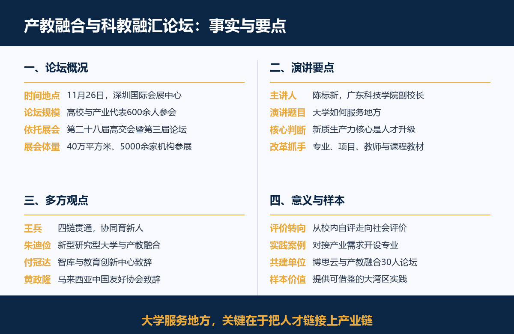
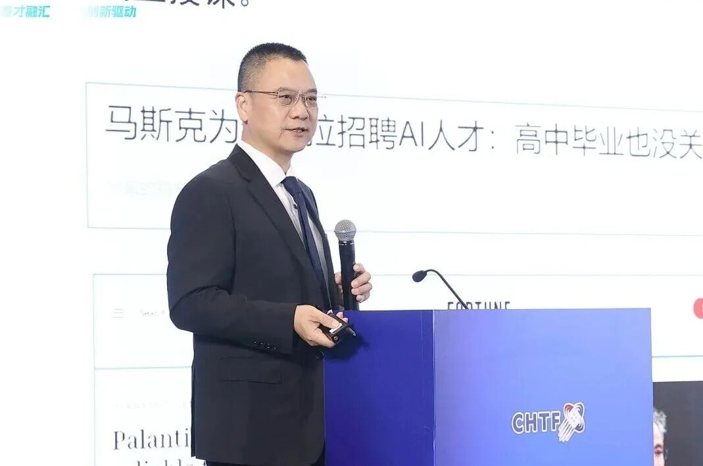
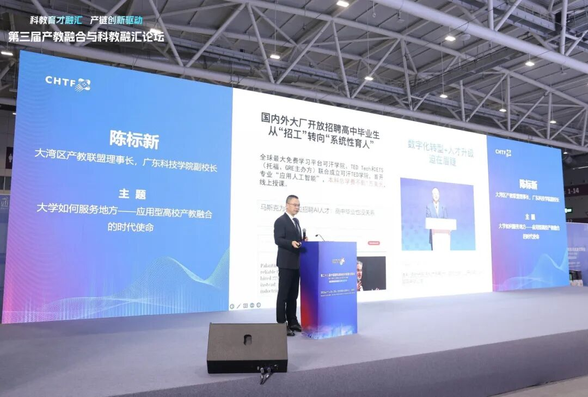

11 月 26 日，第二十八届中国国际高新技术成果交易会暨第三届产教融合与科教融汇论坛在深圳国际会展中心举办，来自高校、国际组织、科研院所、行业协会与企业的代表 600 余人参会。广东科技学院副校长、产教融合 30 人论坛主任陈标新应邀出席会议并作主旨演讲。论坛由中央广播电视总台《品牌与传承》栏目主持人杨冬梅主持。

一、论坛概况：高交会平台上的产教融合专场
本次论坛依托第二十八届中国国际高新技术成果交易会举办。高交会被誉为“中国科技第一展”，是国家级、国际性展会，由深圳市人民政府主办，与广交会、进博会并列三大国家级展会。展会总面积 40 万平方米，来自全球 120 个国家和地区、5000 余家企业与机构参展，预计专业观众 45 万至 50 万人次。
论坛为期三天，由广东博思云科教技术有限公司和产教融合 30 人论坛担任第二十八届高交会产教融合与科教融汇共建单位。深圳公共管理教育培训学院院长、中关村全球高端智库联盟华南区域创新中心主任付冠达，马来西亚—中国友好协会副秘书长黄政隆，深圳市商务局电子商务处处长于喜峰分别致辞。
二、主旨演讲：大学如何服务地方
陈标新作题为《大学如何服务地方——应用型高校产教融合的时代使命》的主旨演讲。他从新质生产力发展背景切入，指出新质生产力的核心是人才升级，高层次、复合型、实践型创新人才已成为产业发展刚需。
他同时指出，传统高等教育培养模式滞后，与产业高速迭代、科技创新跨界融合的现实需求存在结构性断层，成为新时代应用型高校必须回应的时代命题。针对当前高校专业设置滞后、人才培养与市场需求脱节的现状，他提出以专业建设为起点，以项目与教师为关键要素，以课程、教材、实验实训条件建设为抓手，推进教育质量评价从“自评”向社会评价转变。
演讲中，他介绍了广东科技学院培养数字经济创新创业人才、对接产业需求开设专业、构建产教融合平台服务国家战略与地方经济社会发展的实践案例，把应用型高校服务地方的路径落到专业、项目、课程与评价几个具体环节。

三、多方观点：四链贯通与新型研究型大学实践
主旨演讲环节，广东技术师范大学党委书记、广东省产教融合促进会会长王兵以《聚链成生态 协同育新人》为题作专题分享，系统阐释产业链、教育链、人才链、创新链四链深度贯通的协同育人新模式。
深圳理工大学党委书记朱迪俭以《新型研究型大学建设与产教融合实践》为题发表演讲，结合新型高校办学定位与科研特色，深入解读高校赋能产业升级、深化产教协同创新的实践路径。两场分享分别从不同办学类型出发，指向同一个问题：高校的学科与专业设置如何跟上产业变化。
四、论坛价值：可借鉴的大湾区实践样本
本次论坛把高校、国际组织、科研院所、行业协会与企业代表放在同一场域，既讨论人才培养的顶层设计，也给出院校端的具体做法。论坛为全国应用型高校深化产教融合、做实科教融汇提供了可借鉴的大湾区实践样本，也为校企精准对接、协同共建、互利共赢搭建了高层次交流平台。
对研究院关注的数字经济、产业学院与人工智能板块而言，这场讨论的意义在于把“人才升级”从概念变成可执行的链条：产业需求决定专业方向，项目与教师承接培养过程，课程教材与实训条件支撑能力形成，社会评价检验培养质量。

大学服务地方，落脚点是人才，关键在链条。当专业设置、项目实践、教师投入与社会评价被串成闭环，产教融合才不会停留在协议与挂牌层面。此次论坛提供的，正是这样一个从理念走向操作的观察窗口。
本文根据“产教融合联盟”公众号公开报道整理发布。